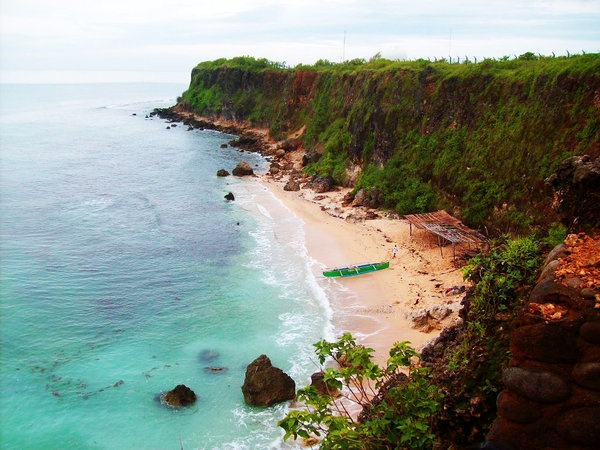
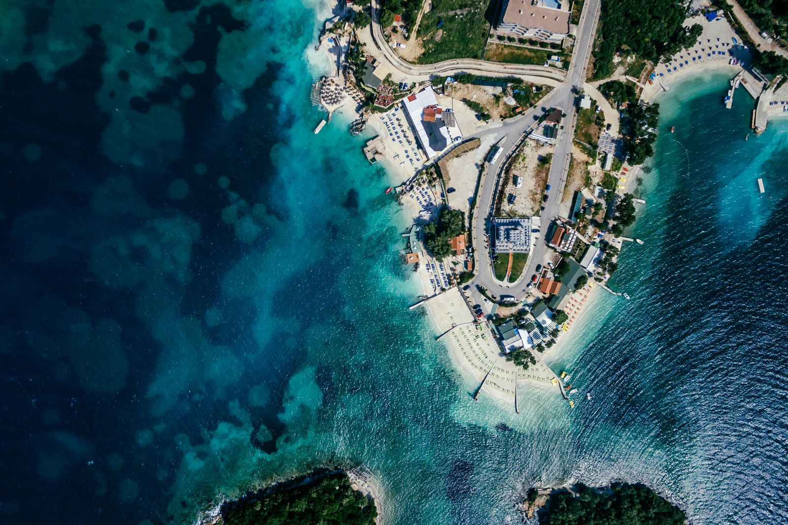

A Place to Rest, Surf, and Remember
by Bacani, Cyril | July 24, 2025
San Juan, La Union, is known as the "Surfing Capital of the Northern Philippines." Both Filipinos and foreigners visit because it provides great relaxation. The same goes for the surfing experience, whether for experts or beginners. People who are uninterested in riding the waves can also enjoy other activities. These can include water sports, food adventures, sightseeing, attending festivals, and many more. The vibrant local culture and laid-back coastal atmosphere create the perfect balance between adventure and rest. Whether you're staying for a weekend or a long holiday, there's always something new to explore in this beautiful town.


It is more than a surfing spot for many people, including myself and my family. It is a place where memories and experiences are made. With the stunning beaches of San Juan, whether we walk alone by the seashore or spend time with the people we love, we can talk about light or serious topics that help us grow closer to those we know. Watching the beauty of the sunset and sunrise allows us to reflect and be grateful for the peaceful life we have. The thrill of riding the waves or simply relaxing by the sea gives us the strength and healing we need. Trying the food and exploring their rich culture also brings excitement and new experiences as we enjoy our vacation.
Near San Juan, there are still many places we can add to our itinerary. The first one is Baluarte Watchtower which, as stated by La Union Tayo!, faces the West Philippine Sea, is 400 years old, and was built during the Spanish period. This can be found in Barangay Victoria, in the Municipality of Luna. The next one is Ma-Cho Temple, said to be the first Taoist temple in the country, located in downtown San Fernando. Another is the Poro Point Lighthouse, also located in San Fernando, La Union, just like Ma-Cho Temple. It is said the tower stands 27 feet high, but according to La Union Tayo!, the lighthouse is rarely used because it has no lantern, although it still flashes a white light, meaning the lighthouse continues to function.
The experience we get through traveling involves many circumstances. When we really think about it, it is full of fun and adventure. Unexpected events can happen, we meet new people, we reflect, and we grow. That is why we should be grateful for being able to travel, relax, and be ourselves as we witness the beauty of the places we go to, whether alone or with the people we love.
REFERENCES
- Ma-cho Temple - La Union tayo! (2017, December 4). La Union Tayo! https://www.launiontayo.com.ph/banner/ma-cho-temple/
- Baluarte, The Watch Tower - La Union tayo! (2017, December 4). La Union Tayo! https://www.launiontayo.com.ph/banner/baluarte-watch-tower/
- Lighthouse Poro point - La Union Tayo! (2018, January 30). La Union Tayo! https://www.launiontayo.com.ph/banner/lighthouse-poro-point/
- Orcilla, M. (n.d.). Pinterest. https://ph.pinterest.com/seattleadobo/la-union-philippines/
- Why tourists visit San Juan, La Union. (n.d.). https://www.fatwavesurfresort.com/blog/why-tourists-visit-san-juan-la-union
{kind=link}